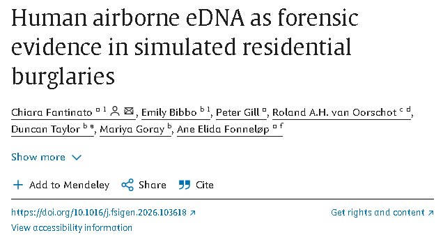

https://www.sciencedirect.com/science/article/pii/S1872497326001997
노르웨이 오슬로 대학병원과 호주 플린더스 대학교의 국제 연구팀이
실내 공기에 퍼진 미세 DNA로 가상 범죄 시나리오의 범인을 찾는데
성공했다.
사람이 아무리 철저하게 흔적을 지우려고 해도,
숨을 쉬고 움직이는 이상 현장에는 타액의 미세 방울과
피부에서 떨어진 각질 조각이 공기 중에 남게 된다.
연구팀은 실제 사람이 거주하는 주택 22채를 시험장으로 선정한 뒤,
범인 역할을 맡은 배우들에게 각 15분간 모의 절도를 벌이게 했다.
침입자가 떠나고 30분 뒤 연구팀은 미세 필터를 통해
주택내 공기를 수집했고 여기에서 미세 DNA를 검출.
어떤 침입자가 절도 행위를 저질렀는지 밝혀내는데 성공했다.
다만 온도, 습도, 실내 환기 여부 등에 따라 범인을 밝혀내는데 실패한 경우도 있다.
믿힌 위쳐센스다